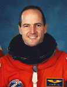

Lyndon B. Johnson Space Center
Houston, Texas 77058
|
National Aeronautics and Space Administration Lyndon B. Johnson Space Center Houston, Texas 77058 |
 |
Biographical Data |
||
G. DAVID LOW
NASA ASTRONAUT (DECEASED)
PERSONAL DATA: Born February 19, 1956, in Cleveland, Ohio. Died March 15, 2008 at the age of 52. He is survived by his wife, JoAnn, their three children, his mother Mary Ruth Low, his brothers and sisters and their families. His father, Mr. George M. Low, is deceased.
EDUCATION: Graduated from Langley High School, McLean, Virginia, in 1974; received a bachelor of science degree in physics-engineering from Washington and Lee University in 1978, a bachelor of science degree in mechanical engineering from Cornell University in 1980, and a master of science degree in aeronautics and astronautics from Stanford University in 1983.
ORGANIZATIONS: Associate Fellow of the American Institute of Aeronautics and Astronautics; member of Omicron Delta Kappa.
SPECIAL HONORS: Recipient of three NASA Space Flight Medals, the NASA Exceptional Service Medal, the NASA Outstanding Leadership Medal, and an honorary doctor of engineering degree from Rensselaer Polytechnic Institute.
EXPERIENCE: Low worked in the Spacecraft Systems Engineering Section of the Jet Propulsion Laboratory, California Institute of Technology, from March 1980 until June 1984. During that time he was involved in the preliminary planning of several planetary missions, an Autonomous Spacecraft Maintenance study, and the systems engineering design of the Galileo spacecraft. Following a one-year leave to pursue graduate studies, Low returned to JPL where he was the principal spacecraft systems engineer for the Mars Geoscience/Climatology Observer Project.
NASA EXPERIENCE: Selected by NASA in May 1984, Low became an astronaut in June 1985. He has held a variety of technical assignments including work on the Remote Manipulator System (RMS), on Extravehicular Activity (EVA), and Orbiter test and checkout tasks at the Kennedy Space Center. Low served as a spacecraft communicator (CAPCOM) in the Mission Control Center during STS Missions 26, 27, 29 and 30. He also served as the lead astronaut in the Man-Systems Group and Station Operations Group of the Space Station Support Office. In 1993 Low was a member of the Russian Integration Team which worked for several months in Crystal City, Virginia to define the changes from the old Space Station Freedom to the new International Space Station. In 1994 he served as the Manager of the EVA Integration and Operations Office, and in 1995 he served as an assistant in the NASA Legislative Affairs Office where he worked with Members of Congress and their staffs to keep them informed about NASA’s aeronautics and space programs.
A veteran of three space flights, Low has logged over 714 hours in space, including nearly 6 hours on a spacewalk. He was a mission specialist on STS-32 (January 9-20, 1990), was the flight engineer on STS-43 (August 2-11, 1991), and was the payload commander on STS-57 (June 21 to July 1, 1993).
David Low left NASA in February 1996 to pursue an aerospace career with Orbital Sciences Corporation’s Launch Systems Group in Dulles, Virginia.
SPACE FLIGHT EXPERIENCE: STS-32 Columbia, launched from the Kennedy Space Center, Florida, on January 9, 1990. During the ten-day mission the crew successfully deployed the Syncom IV-F5 communications satellite, and retrieved the 21,400-pound Long Duration Exposure Facility (LDEF) using the RMS. They also operated a variety of middeck materials and life sciences experiments, as well as the IMAX camera. Following 173 orbits of the Earth in 261 hours, Columbia returned to a night landing at Edwards Air Force Base, California, on January 20, 1990.
STS-43 Atlantis launched from the Kennedy Space Center, Florida, on August 2, 1991. During the nine-day flight, the crew deployed the fifth Tracking and Data Relay Satellite (TDRS-E), in addition to conducting 32 physical, material, and life science experiments, mostly relating to the Extended Duration Orbiter and Space Station Freedom. After 142 orbits of the Earth in 213 hours, the mission concluded with a landing on Runway 15 at the Kennedy Space Center on August 11, 1991.
STS-57 Endeavour launched from the Kennedy Space Center, Florida, on June 21, 1993. The primary objective of this flight was the retrieval of the European Retrievable Carrier satellite (EURECA) using the RMS. Additionally, this mission featured the first flight of Spacehab, a commercially-provided middeck augmentation module for the conduct of microgravity experiments. Spacehab carried 22 individual flight experiments in materials and life sciences research. During the mission David Low and Jeff Wisoff, conducted a 5-hour, 50-minute spacewalk during which the EURECA communications antennas were manually positioned for latching, and various extravehicular activity (EVA) tools and techniques were evaluated for use on future missions. Endeavour landed at the Kennedy Space Center on July 1, 1993, after 155 orbits of the Earth in 239 hours.
MARCH 2008
{kind=link}